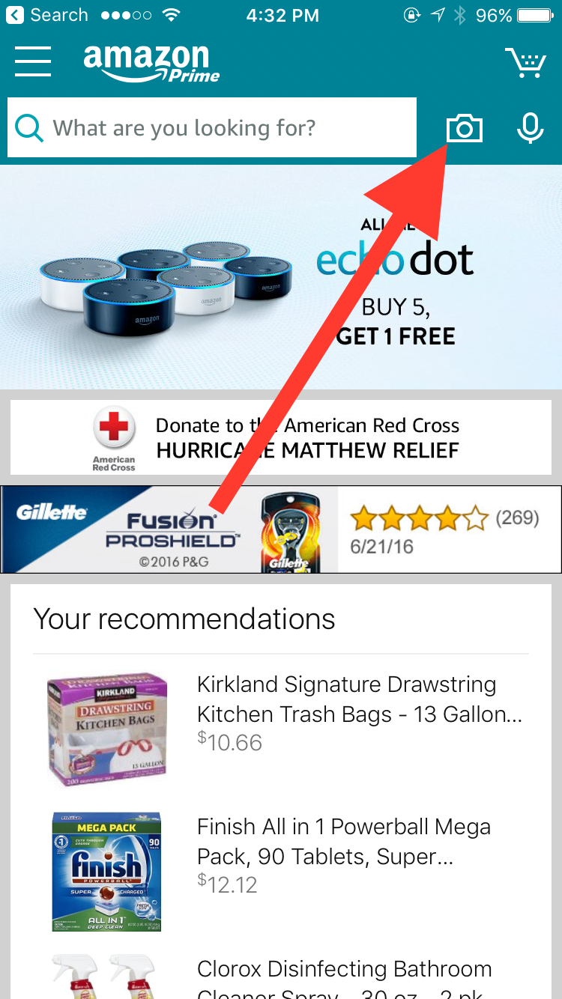
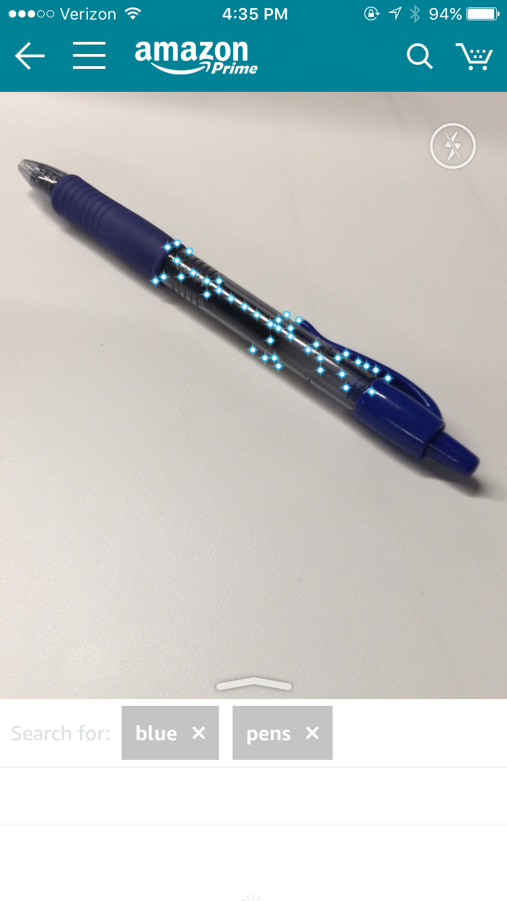
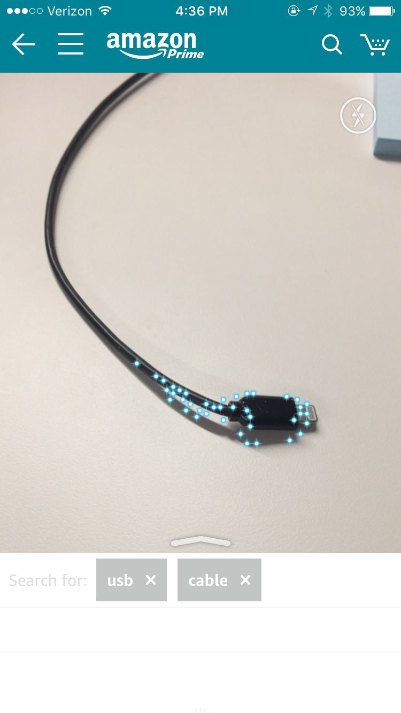
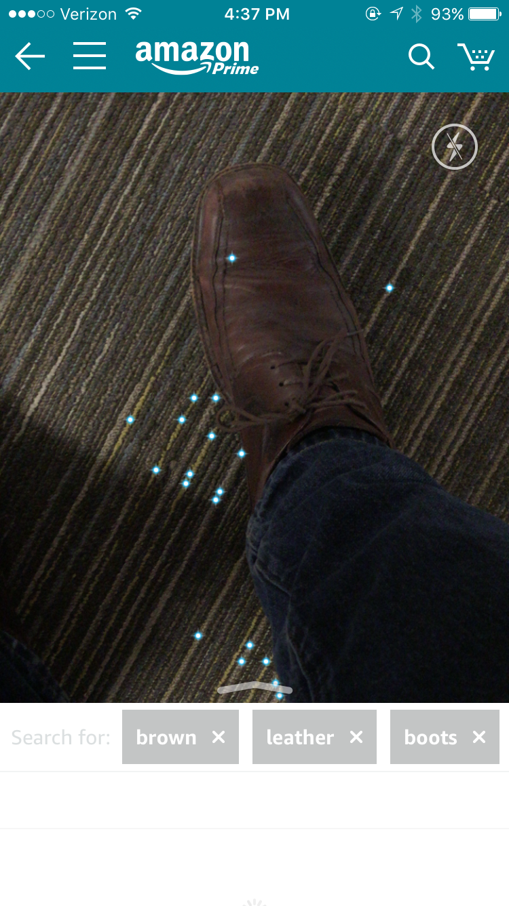
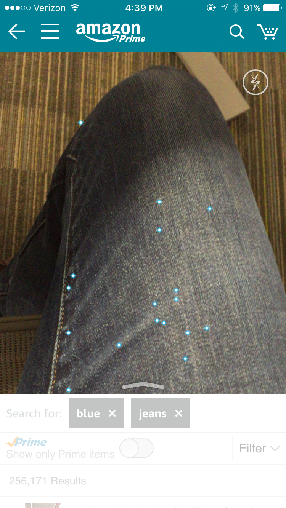
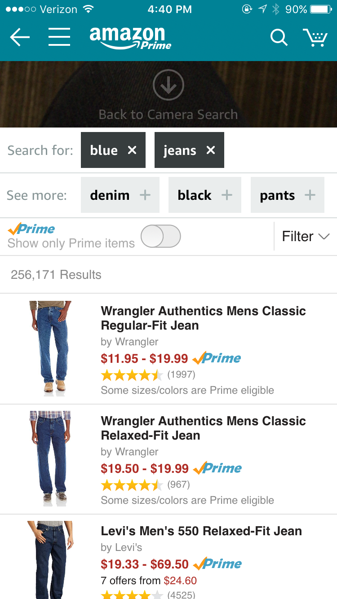

The Amazon app lets you search products with the camera, and it's amazingly impressive. I'm not sure if this is a new feature, but I've never heard anyone talking about it before.
If you have the app, take it out now. And click this picture icon next to the search bar here:

Now start pointing it at things. First I tried something simple.

Then something harder. It's actually an iPhone cable, but very close.

Then something very hard. Super impressive that it pulled out Brown, Leather, Boots. Especially hard in low light.

And clothes, from a super weird angle.

This is now one of my favorite toys. If you see something you like at your friend's house you no longer have to ask "Where can I get one of those?" Just point your camera at it and Amazon takes you directly to the product search results.

The core technology here is very impressive. The use case for searching Amazon is questionable... how often has the above situation been a problem for you? It is useful, however, when you are in a store and are comparison shopping, as Amazon usually has a lower price. But I'm really interested to see what other things can be developed with this type of technology. Hopefully, Amazon opens up use of this through AWS.